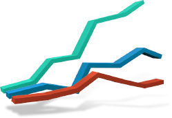
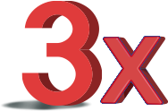

메리츠증권 준법감시인 심사필 제22-313호 (2022.12.30 ~ 2023.12.31)
Why Meritz ETN
다양한 자산을 기초로 한 메리츠 증권만의
ETN 시리즈
국채 3, 5, 10, 30년 ETN 라인업을 갖춘
유일한 국내 증권사 메리츠증권!
다양한 기초자산
다양한 만기의 채권 현물 투자 수단
메리츠증권은 주식 / 채권 / 원자재 등 다양한 자산을 기초로
ETN을
발행하고 있습니다.
그중에서도 채권형 ETN의
경우 중단기에 속하는 3년 만기 국채를
기초자산으로 하는
ETN부터 장기구간에 속하는 30년 만기 ETN까지 다양한
만기의 채권 현물 투자 수단을 투자자에게 제공하고 있습니다.
다양한 원자재 종목을 기초자산
으로 하는 ETN
메리츠증권은 천연가스 / WTI원유 / 탄소배출권 등의
개별 원자재
종목을 기초자산으로 하는 ETN 뿐 아니라,
농산물 섹터의 대표지수를
추종하는 ETN 시리즈 또한
출시하는 등, 다양한 원자재형 ETN
라인업을 갖추고 있습니다.
다양한 배수
-

투자자의 선택의 폭을 넓혀주는
상품 제공메리츠 ETN은 기초지수의 가격변화를 1배 추종하는
정방향 상품뿐
아니라 레버리지 / 인버스 / 인버스 레버리지 등
다양한 배수와 방향의
상품을 제공함으로써 투자자의 선택의
폭을 넓히고 있습니다. -

ETF/ETN 최초로 ±3배 레버리지
상품 출시기존에 ±2배 레버리지 ETF/ETN만이 상장 가능하던
거래소 규정이
2022년 10월 변경되어 채권형 ETN에 한해
3배 레버리지 상품이 허용,
메리츠증권은 국내 ETF/ETN
최초로 ±3배 레버리지 상품을
출시했습니다.